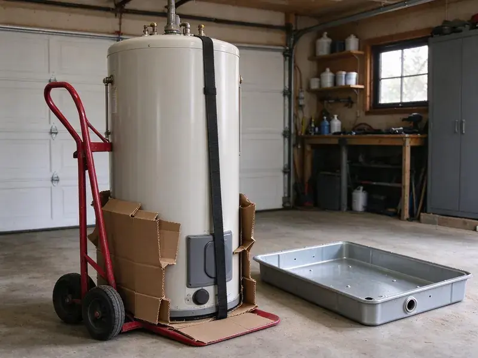

Water Heater Installation in Ewa Beach, HI
HKL Plumbing installs gas, electric, tank and tankless water heaters across Ewa Beach, HI, often the same day you call.
- Licensed, Insured Plumbers
- Major Brands
- Permits and Code Work
- Old Tank Removal Included

Your New Water Heater, Installed Right in Ewa Beach, HI
We size it, install it and haul off the old tank.
Water Heater Replacement and New Installs in Ewa Beach, HI
HKL Plumbing installs water heaters across Ewa Beach, HI, from straight 50 gallon swaps to full tankless conversions. The first questions we ask are how many people live there, how many bathrooms you have and whether two showers ever run at the same time. Those answers decide the size.
Some of what we do:
- Tank and tankless installation
- Leak-tested gas connections
- Sizing by household demand

Additional Plumbing Installation Services in Ewa Beach, HI
We install water heaters, pumps, lines, and fixtures across Ewa Beach, HI with careful, permitted work that passes inspection the first time.


Customers
Why Choose HKL Plumbing for Water Heater Installation in Ewa Beach, HI?
Picking an installer matters more than picking a brand. Most tank failures we see in the first three years trace back to a missing dielectric union, a loose vent or a relief line that dead-ends in the wall. We fix those on every job.
- Licensed Plumbers, Every crew is licensed and insured, and every install follows code.
- Good Brands, We install brands that stand behind their tanks, so service is easy years from now.
- Fast Service, Plenty of installs are finished the same day you call.
Citywide Coverage
Water heater installs across every neighborhood in Ewa Beach are handled by HKL Plumbing. Wherever you live, a crew can usually reach you the same day.
Experienced Team
Each plumber knows how water pressure, venting and fuel supply affect a water heater. That knowledge keeps your new unit running well.
Safety-First Approach
Before we leave, HKL Plumbing tests every connection on the new heater. That covers leaks and carbon monoxide risk.
Trusted Certified Ewa Beach Plumbing Services Professionals
At HKL Plumbing, we are proud to offer certified plumbing services throughout Ewa Beach, HI. Credentials matter in this trade. Our plumbers hold recognized industry credentials, and they follow strict safety and quality rules on every repair, installation and maintenance call we run.
Call Us Now PHCC Plumbing Contractor Recognition
PHCC Plumbing Contractor Recognition Better Business Bureau (BBB) Accreditation
Better Business Bureau (BBB) Accreditation Angi Certified Pro
Angi Certified Pro ISO 9001 Quality Management Certification
ISO 9001 Quality Management CertificationWater Heater Replacement and Installation in Ewa Beach, HI
Gas Tank Water Heater Installation in Ewa Beach
A gas tank is the most common water heater we install, in 40, 50 and 75 gallon sizes. Every job gets a fresh connector, a drip leg, a shutoff and a vent connector with the right rise toward the chimney or flue. We test draft before leaving. Big families do well with gas.

Emergency Water Heater Replacement in Ewa Beach, HI
Water on the garage floor and no hot water usually means the tank has rusted through. Shut the cold supply valve on top of the tank and turn the gas knob to pilot or flip the breaker, then call us. We carry common sizes. Same-day replacement is normal.
Expansion Tank Installation in Ewa Beach, HI
A pressure reducing valve or check valve on the main turns your plumbing into a closed system. When the water heats and expands with nowhere to go, pressure climbs and stresses the relief valve, the toilet fill valves and every supply line in the house. An expansion tank absorbs it. We pre-charge it to match your water pressure.
Hybrid Heat Pump Water Heater Installation in Ewa Beach, HI
Heat pump water heaters pull warmth from the surrounding air and can use about a third of the power of a standard electric tank. A hybrid needs open air space, often around 700 cubic feet, plus a condensate line to a drain, which rules out most small closets. Rebates may apply. We help you decide if one fits.
Major Brand Water Heater Installation in Ewa Beach, HI
Rheem, Bradford White, A.O. Smith and Noritz are the brands we install most. Each has its own install manual, and following it to the letter is what keeps the tank warranty valid if something fails in year six. Our crews know each one. We help you compare models on warranty length and recovery rate.
Commercial Water Heater Installation in Ewa Beach
Restaurants, salons and offices burn through hot water at rates no household tank can keep up with. Our commercial work covers high-BTU tanks and multi-unit tankless racks, along with the larger gas lines, venting and code inspections that come with them. Downtime costs you money. Installs can happen after close.
Gas Water Heater Replacement in Ewa Beach
Swapping a gas water heater comes down to three connections done right, the gas, the vent and the water. We install a new flex connector with a sediment trap, check vent pitch and draft and test every joint with a gas leak detector. Carbon monoxide is the risk. We follow code on all of it.

Electric Water Heater Installation in Ewa Beach, HI
Electric tanks need a 240-volt circuit, usually a 30-amp double-pole breaker with 10-gauge wire. Before hooking up the new tank we check that the breaker and wire size match the elements, since a mismatch is a common cause of tripped breakers and scorched terminals. They do not need a vent. You get more spots to put it.
Water Heater Plumbers Near You in Ewa Beach, HI
Our crews know the water and the home layouts around here. We recommend units that hold up to your water quality and fit where they have to go, whether that is a tight closet or a hot attic. You get care advice too.
Local plumbers know local houses, and HKL Plumbing has installed water heaters in Ewa Beach, HI homes of every age. In older houses the tank sits near a chimney, and in newer ones it usually ends up in the garage or attic with plastic venting. We know both setups.
HKL Plumbing at a Glance
- Licensed and insured plumbers serving Ewa Beach, HI
- 24/7 emergency service with same-day scheduling
- Clear written estimates, no hidden fees
- 4.8-star rated by 529+ Hawaii customers
Ewa Beach Map
Ewa Beach Information
- Population
- 16,415
- Area codes
- Local
- Service area
- Ewa Beach and communities within 40 miles
- Nearby
- Ocean Pointe, Ewa Gentry, Kapolei, Waipahu
A water heater runs every day of the year in Ewa Beach, HI homes, so a correct size and a clean install pay off.
Expert Services
Reach out to HKL Plumbing for reliable plumbing work done by licensed pros in Ewa Beach, HI.
Our Specialized Plumbing Services in Ewa Beach, HI
At HKL Plumbing, we handle the full list of plumbing services across Ewa Beach, HI. From leak detection to full system installs, our team works fast and charges fair prices on homes and commercial properties alike. Take a look at our core services below:


How We Install a Water Heater in Ewa Beach, HI
Most installs are finished in a single visit.
Request a Quote
Reach us at (808) 649-6718 to talk about your water heater and schedule a visit. You get a clear quote.
Site Visit
Our plumber checks your Ewa Beach setup, goes over your options and helps you pick a unit.
Installation
We remove the old unit and install the new one, with every connection, vent and safety check done.
Frequently Asked Questions About Water Heater Installation in Ewa Beach
Most installs in Ewa Beach, HI land between $1,200 and $3,500. Where yours falls depends on tank or tankless, capacity, fuel type and any plumbing or electrical changes the job needs. Hard access costs more. We give you the figure before work starts.
Popping or rumbling, rust-colored water, leaks or an age past ten years are the common clues. One of those alone is reason enough to have it checked.
Rusty hot water, rumbling from the tank, water at the base and an age past ten years are the big ones. Running out of hot water faster than you used to usually means sediment has filled the bottom of the tank or a dip tube has broken. We can inspect it.
An expansion tank absorbs the extra pressure created as water heats. Closed systems usually need one by code.
For two to four people, a 40 or 50 gallon tank usually does the job. Bigger households move up to 75 gallons or tankless.
Our crews install Rheem, AO Smith, Bradford White, Noritz and Navien. If you want to stick with your current brand, we can usually get it.
Manufacturer warranties on the tank and parts usually run anywhere from 6 to 12 years, depending on the model and the brand you choose. HKL Plumbing backs the installation labor too. We review terms with you.
A standard tank replacement usually takes two to four hours. Tankless installs or relocations can take most of a day.
What People Are Saying About Our Plumbing Experts?

Paul B.
Our pit pump ran nonstop even in dry weather. The plumber found the check valve was stuck open, so the same water kept cycling back into the pit. New valve, new float switch, done in an hour. It runs quiet now.
Sump Pump · Ocean Pointe, HI
Daniel K.
A pipe burst in the garage ceiling at 11 at night. Someone answered on the second ring, and the plumber was in my driveway about fifty minutes later. He shut off the main, cut out the split section, and had water back on before 2 am.
Emergency Plumbing · Royal Kunia, HI
Angela D.
Our sump pump quit during a storm and the water was an inch from the basement carpet. HKL Plumbing put in a new pump with a battery backup that same evening. We have had two heavy rains since. It kicked on both times.
Sump Pump · Waipahu, HI
Sofia M.
Two new toilets went in during one visit. The tech set them on new wax rings and swapped the old supply lines. He also noticed our bathroom faucet dripping and replaced the cartridge while he was there. No mess left behind.
Toilet Installation · Royal Kunia, HIBrian W.
I smelled gas behind the dryer and called right away. The plumber found a corroded flex connector, replaced it, and pressure tested the whole line before turning the gas back on. He let me watch the gauge hold steady for fifteen minutes.
Gas Line Repair · Ewa Gentry, HIDiane F.
My kitchen faucet had dripped for months and I finally got tired of hearing it at night. HKL Plumbing came out the next morning, replaced the cartridge and the O rings, and tightened a loose base that was letting water under the sink.
Faucet Repair · Kapolei, HI